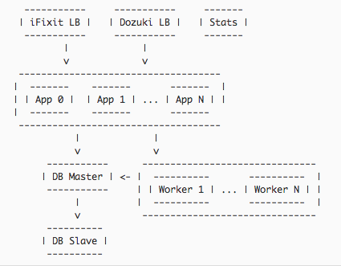
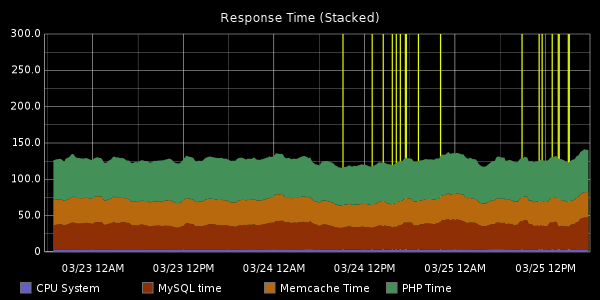
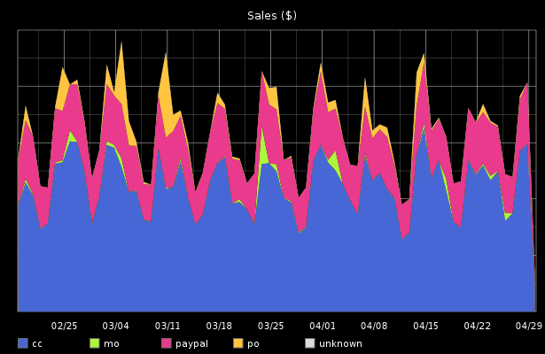
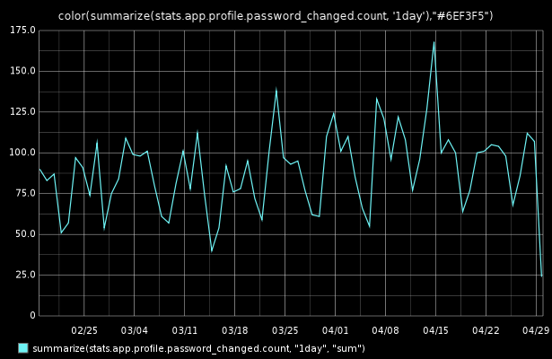
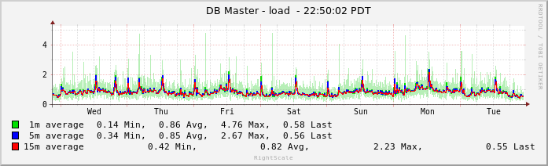
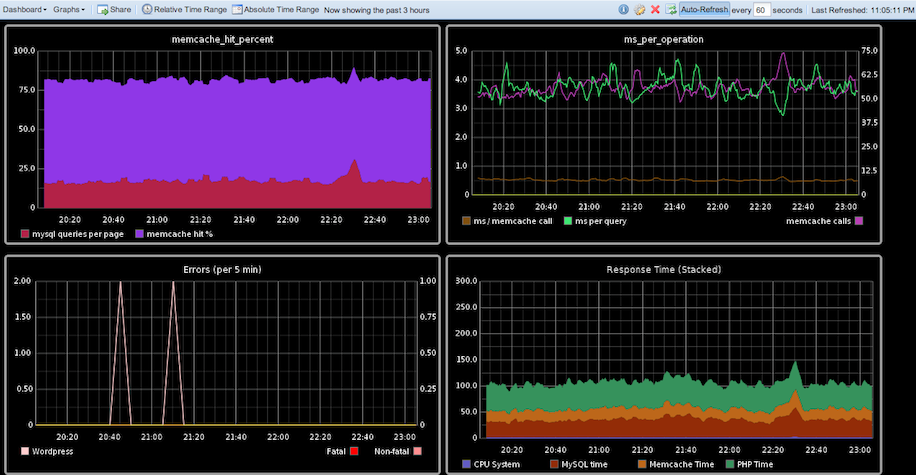

| z, ? | toggle help (this) |
| space, → | next slide |
| shift-space, ← | previous slide |
| d | toggle debug mode |
| ## <ret> | go to slide # |
| c, t | table of contents (vi) |
| f | toggle footer |
| g | toggle follow |
| r | reload slides |
| n | toggle notes |
| p | run preshow |
| P | toggle pause |
| s | choose style |




#!/bin/bash -ex
source ../../shared/setup.sh
cd /tmp/build
PACKAGE=httpd
VERSION=2.2.22
DESTDIR=/tmp/fpm/$PACKAGE-$VERSION
mkdir -p $DESTDIR
export DESTDIR
wget --no-verbose "http://archive.apache.org/dist/httpd/httpd-$VERSION.tar.gz"
tar -zxf httpd-$VERSION.tar.gz
cd httpd-$VERSION
# We need to use the included version of apr:
# http://apache-http-server.18135.n6.nabble.com/Bug-53162-New-Cannot-compile-Apache-2-2-22-td4940024.html
./configure --prefix=/etc/httpd \
--bindir=/usr/bin \"Nobody could even tell us if the system was up as we were sitting there, except by taking out laptops and trying to go on it."
You can't fix what you can't measure.



https://graphite.readthedocs.org/
Stats::recordEvent('talk.web-ops');# Produce a huge number of stats about mysql
mysql -u root -e "show global status" |
# Skip the first line (column headers "Variable_name Value")
tail -n +2 |
# lower-case everything because Capitals_with_underscores_are_annoying
tr '[A-Z]' '[a-z]' |
# Prepend 'mysql.' and turn a few instances of 'name_' into 'name.' mainly
# so they are grouped in the Graphite UI
sed -re "s/^(com|handler|innodb|key|qcache|select|sort|threads)_/./" \
-e "s/^/mysql./" -e "/\S+\s+[0-9.-]+/!d"